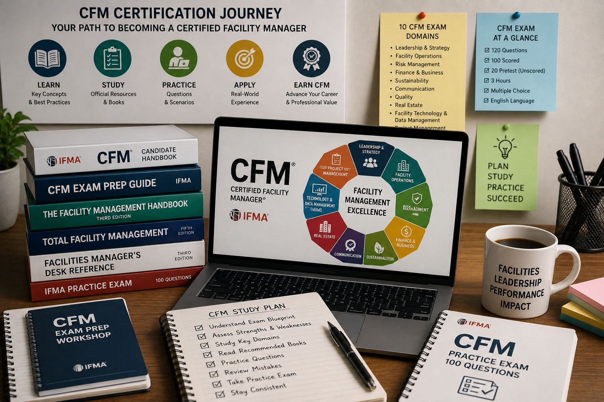

أفضل الكتب والمصادر لدراسة CFM والاستعداد لاختبار مدير المرافق المعتمد 2026

إذا كنت تعمل في إدارة المرافق Facility Management وتفكر في الحصول على شهادة CFM – Certified Facility Manager® من IFMA، فمن أكثر الأسئلة التي ستواجهك:
ما أفضل الكتب والمصادر لدراسة CFM؟
وهل يوجد كتاب واحد يمكنك دراسته ثم دخول الاختبار؟
الإجابة المختصرة:
لا.
اختبار CFM ليس اختبار حفظ كتاب محدد، بل اختبار مهني قائم على قدرتك على تطبيق خبرتك ومعرفتك في مواقف إدارة المرافق.
ولهذا فإن أفضل استراتيجية للتحضير تجمع بين:
مخطط اختبار CFM الحالي.
المصادر الرسمية من IFMA.
تقييم نقاط القوة والضعف.
كتب إدارة المرافق.
التدريب على الأسئلة الموقفية.
وربط ما تدرسه بخبرتك العملية.
إذا كنت تريد تنظيم هذه الرحلة في برنامج تدريبي، يمكنك الاطلاع على دورة CFM للتحضير لشهادة مدير المرافق المعتمد من IFMA في معهد مسارتك.
إذا كنت تريد البدء مباشرة، استخدم الترتيب التالي:
CFM Candidate Handbook 2026
CFM Exam Content Outline
CFM Exam Prep Guide
IFMA Practice Exam
IFMA Core Competency Courses
CFM Exam Prep Workshop
The Facility Management Handbook
Total Facility Management – 5th Edition
Facilities Manager's Desk Reference – 3rd Edition
سيناريوهات ومشكلات حقيقية من بيئة عملك.
والقاعدة الأهم:
لا تحاول قراءة كل كتاب عن Facility Management؛ حدد أولًا الفجوات الموجودة في معرفتك ثم اختر المصدر الذي يعالجها.
من الخطأ أن تبدأ بشراء الكتب قبل معرفة ما الذي يقيسه الاختبار.
شهادة Certified Facility Manager – CFM تصدر عن International Facility Management Association – IFMA، وهي موجهة أساسًا إلى المتخصصين ذوي الخبرة في إدارة المرافق.
الاختبار الحالي في 2026 يتكون من:
120 سؤال اختيار من متعدد.
100 سؤال محسوب في النتيجة.
20 سؤال Pretest غير محسوب.
3 ساعات للاختبار الفعلي.
الأسئلة لها إجابة واحدة صحيحة.
الاختبار الحالي متاح باللغة الإنجليزية.
وهذه نقطة مهمة جدًا لمن يبحث عن:
اختبار CFM بالعربي.
حتى وفق دليل IFMA الحالي، لغة الاختبار هي الإنجليزية.
ستجد على الإنترنت مقالات وملفات لا تزال تتحدث عن:
11 CFM Competencies.
وهذه المعلومات مرتبطة بالهيكل السابق للاختبار.
في النسخة الحالية من CFM، تعرض IFMA 10 مجالات رئيسية للاختبار.
وهي:
Leadership & Strategy.
Facility Operations.
Risk Management.
Finance & Business.
Sustainability.
Communication.
Quality.
Real Estate.
Facility Technology & Data Management.
Project Management.
لذلك عند اختيار كتاب أو دورة CFM في 2026 اسأل:
هل المحتوى يغطي Blueprint الحالي أم ما زال مبنيًا على النسخة القديمة؟
أفضل نقطة بداية ليست كتابًا تجاريًا.
ابدأ بـ:
CFM Candidate Handbook
الصادر عن IFMA.
هذا الملف يشرح لك:
شروط الأهلية.
طريقة التقديم.
محتوى الاختبار.
عدد الأسئلة.
مدة الاختبار.
قواعد الاختبار.
طريقة احتساب النتيجة.
سياسات الاختبار.
إجراءات ما بعد النجاح.
المحافظة على الاعتماد.
لماذا أعتبره أهم مصدر؟
لأنه يمنعك من بناء خطة دراسة على معلومات قديمة.
فمثلًا، ستجد محتوى قديمًا يقول:
180 سؤالًا و11 Competencies.
بينما النسخة الحالية للاختبار أصبحت 120 سؤالًا و10 مجالات.
بعد قراءة الـHandbook، انتقل إلى:
CFM Exam Prep Guide.
IFMA نفسها تعرضه ضمن أدوات تقييم الاستعداد للاختبار.
ويساعدك على:
فهم المجالات التي تحتاج معرفتها.
تقييم مستوى استعدادك.
تجربة Sample Questions.
اكتشاف نقاط ضعفك.
تحديد أين يجب أن تركز الدراسة.
استخدمه كأداة تشخيص.
اسأل نفسك في كل مجال:
هل أعرف المفهوم؟
ثم:
هل طبقت هذا في عملي؟
ثم:
هل أستطيع اتخاذ قرار في سيناريو متعلق به؟
هذه هي العقلية الأقرب لطبيعة CFM.
بعد مراجعة المحتوى، يجب أن تتدرب على شكل الأسئلة.
توفر IFMA حاليًا CFM Practice Exam يحتوي على 100 سؤال تدريبي مع إمكانية إعادة المحاولة عدة مرات.
ولكن هناك نقطة مهمة:
نتيجتك في الاختبار التجريبي ليست ضمانًا للنجاح في الاختبار الحقيقي.
IFMA توضح أن أدوات التحضير اختيارية ولا تضمن نتيجة الاختبار.
لا تسجل النتيجة فقط.
أنشئ جدولًا مثل التالي:
| المجال | عدد الأخطاء | السبب | الإجراء |
|---|---|---|---|
| Finance & Business | 6 | ضعف في Life Cycle Cost | مراجعة المالية |
| Risk Management | 4 | خلط بين Response Strategies | مراجعة المخاطر |
| Facility Operations | 2 | ضعف في Asset Management | دراسة العمليات |
| Real Estate | 5 | خبرة عملية محدودة | مصدر إضافي |
| Sustainability | 3 | نقص في المفاهيم | مراجعة الاستدامة |
هذه الطريقة تحول الاختبار التجريبي إلى خطة دراسة شخصية.
لا يحتاج كل متقدم إلى دراسة المجالات العشرة من الصفر.
قد تكون مثلًا قويًا في:
Facility Operations
لكن ضعيفًا في:
Finance & Business.
أو لديك خبرة في:
Projects
لكن خبرتك محدودة في:
Real Estate.
ولهذا توفر IFMA دورات منفصلة للمجالات المختلفة لتساعد المتخصص على سد فجوات المعرفة.
وهذا في رأيي من أفضل أساليب الاستعداد لـCFM:
لا تدرس كل شيء بنفس القوة.
ركز أكثر على المناطق التي لا تمارسها في عملك اليومي.
توفر IFMA أيضًا:
CFM Exam Prep Workshop.
لكن من المهم فهم وظيفته.
الـWorkshop لا يهدف إلى تدريس جميع مجالات إدارة المرافق من البداية.
بل يركز بصورة أكبر على:
منهجية الاختبار.
التفكير النقدي.
تحليل السيناريو.
التعامل مع Sample Questions.
فهم طريقة اختيار الإجابة الأفضل.
لذلك إذا كانت معرفتك الأساسية ضعيفة، فلا تعتمد على Exam Workshop وحده.
من أشهر المراجع العامة في مجال إدارة المرافق:
The Facility Management Handbook
لـ:
David G. Cotts, Kathy O. Roper وRichard P. Payant.
الكتاب يغطي مجموعة واسعة من موضوعات إدارة المرافق، مثل:
التخطيط.
الميزانيات.
العقارات.
الاستدامة.
الأمن.
الاستعداد للطوارئ.
التشغيل والصيانة.
إدارة المرافق في المؤسسة.
وهو مرجع شامل يتجاوز 600 صفحة في طبعته الثالثة.
لا.
وهذا التفريق مهم جدًا.
هو مرجع في إدارة المرافق وليس Exam Guide رسميًا صادرًا عن لجنة اعتماد CFM.
لذلك استخدمه لتعميق فهم الموضوعات، وليس لتحديد محتوى الاختبار.
المرجع الأساسي لنطاق CFM يبقى:
IFMA Exam Blueprint وCandidate Handbook.
من أفضل الكتب لمن يريد فهم إدارة المرافق كوظيفة متكاملة:
Total Facility Management – 5th Edition
لـ:
Brian Atkin وAdrian Brooks.
الطبعة الخامسة صدرت في 2021، وتركز على تطبيق مفاهيم Facility Management في الواقع العملي وربطها باحتياجات المالك والمشغل والمستخدم ومدير المرافق.
لماذا أراه مفيدًا لطالب CFM؟
لأنه يساعدك على فهم الصورة الأكبر.
CFM لا تختبر:
كيف أصلح HVAC؟
بقدر ما تختبر قدرتك على التفكير كمدير مرافق مسؤول عن:
الأصول.
الخدمات.
الناس.
التكلفة.
المخاطر.
الأداء.
الاستراتيجية.
مصدر عملي آخر:
Facilities Manager's Desk Reference – 3rd Edition
لـ:
Jane M. Wiggins.
وهو مرجع عملي يمكن الرجوع إليه في موضوعات Facility Management المختلفة.
الطبعة الثالثة صدرت في 2020، وما زالت Wiley تعرضها ضمن مراجع إدارة المرافق الحالية.
لا تجعل مصادر دراستك كتبًا فقط.
توفر IFMA أيضًا Knowledge Library تحتوي على أبحاث ومقالات ومواد حول العديد من موضوعات Facility Management.
وهذا مفيد خصوصًا في الموضوعات التي تتغير بسرعة مثل:
Smart Buildings.
IoT.
Workplace Technology.
Sustainability.
BIM.
AI.
Asset Management.
وتوجد حتى قوائم قراءة متخصصة لمديري المرافق تشمل كتبًا في إدارة الأصول والاستدامة والقيادة والتكنولوجيا.
قد يكون هذا أهم مصدر لا ينتبه إليه الكثيرون.
CFM شهادة Competency-Based.
أي أن خبرتك جزء أساسي من قدرتك على الإجابة.
لذلك راجع مشاريعك الحقيقية.
مثلًا:
Facility Operations
راجع موقفًا اضطررت فيه إلى:
اتخاذ قرار صيانة.
استبدال أصل.
التعامل مع Failure.
إدارة مورد.
Finance
راجع:
Budget.
CAPEX.
OPEX.
Life Cycle Cost.
Vendor Costs.
Risk
راجع:
Incident.
Emergency.
Business Continuity.
Risk Register.
Quality
راجع:
KPI.
SLA.
Vendor Performance.
Customer Satisfaction.
Projects
راجع مشروعًا نفذته:
Scope.
Budget.
Schedule.
Procurement.
Handover.
هكذا تربط المعرفة بالخبرة.
1. Leadership & Strategy
ركز على:
Strategic Planning.
Leadership.
Change Management.
Stakeholder Management.
Conflict Management.
Team Leadership.
مدير المرافق المحترف لا يعمل بمعزل عن أهداف المؤسسة.
يشمل:
المباني.
أنظمة المبنى.
البنية التحتية.
الصيانة.
التشغيل.
Asset Management.
FF&E.
Health & Safety.
Security.
Work Management Systems.
وهذا المجال يرتبط مباشرة بالعمل اليومي لعدد كبير من مديري المرافق.
ركز على:
تحديد المخاطر.
تقييم المخاطر.
الاستجابة.
Emergency Preparedness.
Business Continuity.
Facility Resilience.
إذا كان هذا الجانب جزءًا رئيسيًا من وظيفتك، يمكنك أيضًا الاستفادة من دورة إدارة المخاطر PMI-RMP في معهد مسارتك كتخصص مكمل.
من أهم المناطق التي يجب ألا يهملها المدير القادم من خلفية هندسية.
تعلم:
Operational Budget.
Capital Budget.
Procurement.
Contracts.
Financial Analysis.
Reporting.
Life Cycle Cost.
Business Case.
السؤال ليس دائمًا:
ما الحل الفني الأفضل؟
أحيانًا يكون السؤال:
ما القرار الذي يحقق أفضل قيمة للمؤسسة؟
ركز على:
الطاقة.
المياه.
النفايات.
المواد.
الاستدامة التشغيلية.
Indoor Environment.
أثر قرارات المنشأة على الموارد.
ولا تتعامل مع Sustainability كفصل نظري.
اربطها بـ:
Cost + Performance + Risk + Organizational Goals.
مدير المرافق يتعامل مع:
الإدارة العليا.
الموظفين.
الفنيين.
المقاولين.
الموردين.
العملاء الداخليين.
الجهات الخارجية.
لذلك تحتاج إلى فهم:
Communication Planning.
Negotiation.
Reporting.
Conflict Resolution.
Crisis Communication.
ركز على:
KPI.
SLA.
Quality Measurement.
Continuous Improvement.
Vendor Performance.
Customer Satisfaction.
وللتوسع في بناء أنظمة الجودة والعمليات والتحسين المستمر، يمكن ربط هذا القسم بـدورة ISO 9001 لإدارة الجودة في معهد مسارتك.
هذه من المناطق التي قد تكون جديدة على بعض مديري التشغيل والصيانة.
ركز على:
Space Requirements.
Property Lifecycle.
Leasing.
Occupancy.
Space Utilization.
Real Estate Decisions.
إذا كانت خبرتك كلها Technical Operations، فلا تهمل هذا المجال.
إدارة المرافق الحديثة أصبحت تعتمد بصورة أكبر على البيانات.
تعرف على:
CMMS.
CAFM.
IWMS.
Asset Data.
BIM.
Smart Buildings.
IoT.
Operational Data.
Dashboards.
Data Governance.
لكن لا تحفظ أسماء الأنظمة فقط.
افهم:
ما المشكلة التي يحلها كل نظام؟
مديرو المرافق يديرون باستمرار مشروعات مثل:
Renovation.
Fit-Out.
Relocation.
Equipment Replacement.
Infrastructure Upgrades.
لذلك تحتاج إلى فهم:
Scope.
Schedule.
Cost.
Risk.
Procurement.
Stakeholders.
Project Handover.
إذا كان هذا جزءًا كبيرًا من مسؤولياتك، يمكنك أيضًا مراجعة دورة PMP لإدارة المشاريع الاحترافية.
بدل شراء خمسة كتب، استخدم هذا الأسلوب:
| نقطة الضعف | المصدر المناسب |
|---|---|
| فهم اختبار CFM | Candidate Handbook |
| تحديد المجالات المطلوبة | Exam Content Outline |
| معرفة مستواك | CFM Exam Prep Guide |
| التدريب على الأسئلة | IFMA Practice Exam |
| إدارة المرافق بصورة شاملة | Facility Management Handbook |
| فهم FM من منظور استراتيجي | Total Facility Management |
| مرجع سريع للعمل | Facilities Manager's Desk Reference |
| فجوة في مجال معين | IFMA Competency Course |
| طريقة حل الاختبار | CFM Exam Prep Workshop |
| تطبيق المفاهيم | خبرتك ومشروعاتك الفعلية |
لا أنصح بذلك كخطة أساسية.
الأفضل:
الخطوة الأولى
اقرأ Exam Blueprint.
الخطوة الثانية
قيّم نفسك في المجالات العشرة.
الخطوة الثالثة
صنفها:
قوي – متوسط – ضعيف.
الخطوة الرابعة
اختر الكتاب أو المصدر بناءً على الفجوة.
هذه استراتيجية أكثر كفاءة من قراءة آلاف الصفحات دون هدف.
استخدم دورة:
Assess
قيّم مستواك.
Learn
راجع المجال.
Apply
اربطه بموقف حقيقي.
Practice
حل سؤالًا أو Scenario.
Analyze
افهم لماذا الإجابة الأفضل هي الأفضل.
Review
راجع نقاط ضعفك.
ثم كرر الدورة.
لنفترض أن لديك أصلًا رئيسيًا في المنشأة أصبح كثير الأعطال.
المبتدئ قد يسأل:
كيف أصلحه؟
أما مدير المرافق المحترف فيفكر في:
تكلفة الصيانة.
عمر الأصل.
Downtime.
Business Risk.
Replacement Cost.
Life Cycle Cost.
تأثير التعطل على المستخدمين.
الميزانية.
الاستدامة.
توفر البديل.
وهذا هو التفكير متعدد الأبعاد الذي تحتاجه في CFM.
أثناء حل أي Scenario اسأل:
ما المشكلة الحقيقية؟
ما المعلومات التي أحتاجها؟
من أصحاب المصلحة؟
ما المخاطر؟
ما تأثير القرار ماليًا؟
هل يتوافق مع استراتيجية المؤسسة؟
ما الحل الأكثر استدامة على المدى الطويل؟
هذه الأسئلة تقربك من عقلية Facility Manager.
الأسبوع الأول
Candidate Handbook.
Exam Blueprint.
Self-Assessment.
تحديد فجوات المعرفة.
الأسبوع الثاني
Facility Operations + Technology
Assets.
Maintenance.
CMMS.
Data.
Building Systems.
الأسبوع الثالث
Finance & Business + Real Estate
CAPEX.
OPEX.
Budgets.
Contracts.
Procurement.
Real Estate.
الأسبوع الرابع
Risk + Sustainability
Risk Assessment.
Emergency.
Continuity.
Energy.
Water.
Waste.
الأسبوع الخامس
Leadership + Communication
Strategy.
Change.
Teams.
Stakeholders.
Conflict.
الأسبوع السادس
Quality + Project Management
KPI.
SLA.
Continuous Improvement.
Scope.
Cost.
Schedule.
Handover.
الأسبوع السابع
Practice Questions.
Scenario Analysis.
مراجعة الأخطاء.
الأسبوع الثامن
Mock Exams.
مراجعة المناطق الضعيفة.
تدريب على إدارة الوقت.
مراجعة المصطلحات الإنجليزية.
استخدم جدولًا مثل:
| السؤال | المجال | سبب الخطأ | الدرس |
|---|---|---|---|
| 1 | Finance | لم أفهم TCO | أراجع Life Cycle Cost |
| 2 | Risk | اخترت رد فعل قبل التحليل | Analyze first |
| 3 | Quality | خلطت KPI وSLA | مراجعة Performance |
| 4 | Projects | تجاهلت Stakeholder | راجع أصحاب المصلحة |
بعد 100 سؤال سيصبح لديك:
Study Guide خاص بك أنت.
وهذا أقوى من أي ملخص عام.
توجد مواد ودورات عربية في إدارة المرافق، لكن الاختبار الرسمي الحالي نفسه باللغة الإنجليزية وفق دليل IFMA الحالي.
لذلك حتى لو درست الشرح بالعربي، لا أنصح بترجمة كل مصطلح إلى العربية فقط.
استخدم الاثنين معًا:
إدارة المرافق
Facility Management
استمرارية الأعمال
Business Continuity
إدارة الأصول
Asset Management
تكلفة دورة الحياة
Life Cycle Cost
مستوى اتفاقية الخدمة
Service Level Agreement – SLA
مؤشرات الأداء
Key Performance Indicators – KPI
هنا يجب أن نكون واضحين.
CFM ليست شهادة Entry-Level.
متطلبات الأهلية الحالية من IFMA هي أحد المسارين:
5 سنوات من خبرة Facility Management مع أي مستوى تعليمي.
أو 3 سنوات خبرة مع بكالوريوس أو ماجستير في Facility Management.
لذلك من لا يملك خبرة كافية يجب ألا يتعامل مع CFM كأنها دورة تأسيسية فقط.
هذه نقطة مهمة جدًا للمستخدم الذي ما زال في بداية المجال.
FMP
موجهة بصورة أكبر لبناء المعرفة الأساسية في Facility Management.
CFM
تقيس معرفة وخبرة المهني المتقدم.
IFMA نفسها تفرق بين المسارين بهذه الصورة: FMP لبناء المعرفة، بينما CFM تختبر معرفة ومهارات الشخص الذي يستوفي متطلبات الخبرة.
لذلك لا تختار الشهادة بناءً على أيهما “أعلى” فقط.
اختر التي تناسب مرحلتك المهنية.
لا.
IFMA توضح أن لا يوجد Coursework أو Training محدد مطلوب للتقديم إلى CFM طالما أنك تستوفي متطلبات الأهلية.
كما أن المواد التدريبية وPractice Exams اختيارية.
وهذه نقطة مهمة للثقة والمصداقية:
دورة التحضير لا تمنحك شهادة CFM الدولية تلقائيًا.
الشهادة تصدر من IFMA بعد:
استيفاء شروط الأهلية.
التقديم.
اجتياز الاختبار.
استكمال المتطلبات المرتبطة بالاعتماد.
رغم أن الدورة ليست شرطًا من IFMA، فإنها قد تكون مفيدة إذا كنت:
لا تعرف من أين تبدأ.
خبرتك قوية في مجال وضعيفة في مجالات أخرى.
تريد شرح المصطلحات.
تحتاج إلى خطة دراسة.
تريد مناقشة Scenarios.
تريد مراجعة المجالات العشرة بطريقة منظمة.
تحتاج إلى التدريب على طريقة التفكير في الأسئلة.
يمكنك الاطلاع على دورة CFM في معهد مسارتك بالرياض وأونلاين.
صفحة البرنامج الحالية تعرض دورة مدتها 3 أسابيع للتحضير لمجالات CFM، مع خيارات حضور بحسب الدفعات المتاحة.
ملخصات CFM القديمة
خصوصًا التي ما زالت تعرض:
11 Competencies + 180 Questions.
لأن Blueprint الاختبار تغير.
Dumps
لا تبنِ استعدادك على حفظ أسئلة مسربة أو مجهولة المصدر.
حتى لو جاءك Scenario مشابه، تغيير معلومة واحدة قد يغير الإجابة بالكامل.
الكتب فقط
CFM مبنية على Competency.
القراءة دون خبرة وتطبيق لن تعوض فهم بيئة إدارة المرافق.
خبرتك فقط
العكس أيضًا خطأ.
قد تكون مدير تشغيل ممتازًا لمدة عشر سنوات لكن لا تتعامل يوميًا مع:
Real Estate.
Sustainability.
Finance.
Projects.
ولهذا تحتاج إلى سد الفجوات.
إذا أردنا اختصار كل المقالة في مسار واحد:
1. اقرأ CFM Handbook.
2. تعرف على المجالات العشرة الحالية.
3. قيّم نفسك في كل مجال.
4. استخدم الكتب فقط لسد الفجوات.
5. اربط المفاهيم بخبرتك.
6. حل Practice Questions.
7. اكتب أسباب أخطائك.
8. راجع المجالات الضعيفة.
9. نفذ Mock Exam.
10. لا تتقدم حتى تصبح مستعدًا فعليًا.
ما أفضل كتاب للتحضير لاختبار CFM؟
لا يوجد كتاب واحد رسمي مطلوب لاجتياز CFM. الأفضل أن تبدأ بـCFM Candidate Handbook وExam Prep Guide من IFMA، ثم تستخدم كتب Facility Management لتقوية المجالات التي تحتاجها.
كم عدد أسئلة اختبار CFM في 2026؟
الاختبار الحالي يتكون من 120 سؤالًا، منها 100 سؤال محسوب و20 سؤال Pretest غير محسوب.
كم مدة اختبار CFM؟
مدة الاختبار الفعلية 3 ساعات.
كم عدد مجالات CFM الحالية؟
يغطي الاختبار الحالي 10 مجالات رئيسية في إدارة المرافق.
هل اختبار CFM باللغة العربية؟
وفق Candidate Handbook الحالي، اختبار CFM متاح باللغة الإنجليزية.
هل يجب حضور دورة CFM قبل الاختبار؟
لا. IFMA لا تشترط Coursework معينًا للتقديم، لكن التدريب قد يساعد في سد فجوات المعرفة والتحضير.
هل يمكن للمبتدئ دخول اختبار CFM؟
CFM تتطلب خبرة مهنية محددة. لذلك يجب أولًا مراجعة شروط الأهلية الرسمية من IFMA.
ما أفضل كتاب شامل في Facility Management؟
من المراجع المعروفة The Facility Management Handbook، كما يعتبر Total Facility Management – Fifth Edition مرجعًا حديثًا ومفيدًا لفهم إدارة المرافق بصورة متكاملة.
هل الأسئلة تعتمد على الحفظ؟
CFM شهادة Competency-Based، لذلك تحتاج إلى فهم كيفية تطبيق المعرفة والخبرة على مواقف إدارة المرافق.
كيف أعرف أنني جاهز؟
استخدم Exam Prep Guide وSelf-Assessment والأسئلة التدريبية، ثم ركز على المجالات التي يظهر فيها ضعف متكرر.
لإنشاء Topic Cluster قوي حول إدارة المرافق، استخدم روابط داخلية ذات علاقة حقيقية.
الصفحة الأساسية
دورة CFM للتحضير لشهادة مدير المرافق المعتمد
إدارة المشاريع
دورة PMP في إدارة المشاريع الاحترافية
مناسبة عندما يدير Facility Manager مشاريع تطوير وتجديد وتسليم.
إدارة المخاطر
مناسبة لموضوع Facility Risk وBusiness Continuity وRisk Planning.
إدارة الجودة
دورة ISO 9001 لنظام إدارة الجودة
ترتبط بـKPI وعمليات الجودة والتحسين المستمر.
إدارة الأزمات
دورة إدارة الأزمات واستمرارية الأعمال
مناسبة للطوارئ والاستجابة واستمرارية العمليات.
التحضير الصحيح لـCFM لا يبدأ من سؤال:
أي كتاب أحفظ؟
بل من سؤال:
أين توجد الفجوات في خبرتي كمدير مرافق؟
ابدأ بالمصادر الرسمية من IFMA:
CFM Candidate Handbook
ثم:
Exam Prep Guide
ثم:
Practice Exam
واستخدم الكتب المتخصصة مثل:
The Facility Management Handbook
و:
Total Facility Management
لتوسيع معرفتك في المجالات التي تحتاج إليها.
ثم اربط كل مفهوم بموقف حقيقي تعاملت معه في:
التشغيل، الأصول، العقود، الميزانية، المخاطر، الجودة، الاستدامة، العقارات، التقنية أو المشاريع.
CFM لا تقيس قدرتك على تذكر تعريف إدارة المرافق؛ بل تقيس قدرتك على التفكير واتخاذ القرار كمدير مرافق.
إذا كنت تريد مراجعة المجالات بطريقة منظمة والاستعداد للاختبار، تعرف على دورة CFM من معهد مسارتك بالرياض وأونلاين.
SEO Title:
أفضل كتب ومصادر CFM 2026 | دليل التحضير لاختبار IFMA
بديل CTR:
أفضل الكتب والمصادر لدراسة CFM والاستعداد للاختبار 2026
Meta Description:
تعرف على أفضل الكتب والمصادر لدراسة CFM في 2026، من دليل IFMA الرسمي وPractice Exam إلى أفضل كتب إدارة المرافق وخطة عملية للتحضير للاختبار.
الكلمة المفتاحية الرئيسية:
أفضل كتب CFM
الكلمات الثانوية:
مصادر CFM
دراسة CFM
كتب CFM
CFM بالعربي
اختبار CFM
التحضير لاختبار CFM
CFM IFMA
دورة CFM
دورة إدارة المرافق
مدير المرافق المعتمد
شهادة CFM
أسئلة CFM
CFM Exam 2026
Facility Management Books
أفضل كتب إدارة المرافق
CFM Exam Prep
شروط CFM
اختبار مدير المرافق المعتمد
Informational
أفضل كتب ومصادر CFM
Educational
كيفية دراسة المجالات العشرة
Certification
الاستعداد لاختبار IFMA CFM
Commercial Investigation
دراسة ذاتية أم دورة CFM؟
Transactional
التسجيل في دورة CFM.
ما أفضل مصادر دراسة CFM؟
أفضل مصادر دراسة CFM هي CFM Candidate Handbook وCFM Exam Prep Guide وPractice Exam من IFMA، إلى جانب كتب متخصصة مثل The Facility Management Handbook وTotal Facility Management. ويجب أن تركز خطة الدراسة على المجالات العشرة الحالية لاختبار CFM وعلى سد فجوات الخبرة بدل الاعتماد على الحفظ.
ابدأ بمراجعة CFM Candidate Handbook والـExam Blueprint الحالي من IFMA، ثم قيّم خبرتك في المجالات العشرة: القيادة والاستراتيجية، التشغيل، المخاطر، المالية، الاستدامة، التواصل، الجودة، العقارات، التقنية والبيانات، وإدارة المشاريع. بعد ذلك استخدم المصادر والكتب لسد نقاط الضعف، ثم تدرب على الأسئلة الموقفية والاختبارات التجريبية.
دورات ذات صلة
دورة ITIL 4 Drive Stakeholder Value بالرياض | احتراف إدارة القيمة
المدة: 5 Days
أقرب موعد: سيتم تحديده قريبًا
عرض تفاصيل البرنامج
دورة Red Hat Performance | تحسين أداء الأنظمة
المدة: 5 Days
أقرب موعد: سيتم تحديده قريبًا
عرض تفاصيل البرنامج
دورة ITIL 4 Sustainability in Digital | استدامة التحول الرقمي
المدة: 5 Days
أقرب موعد: سيتم تحديده قريبًا